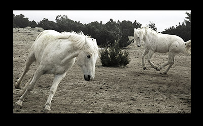
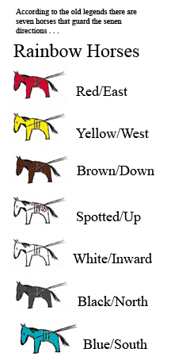
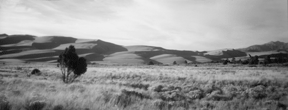

More Info
Call It Horses!
a novel of the American Serengeti
Research and Legwork
Writing an historical novel requires research. Writing a present-day novel requires legwork--an old journalism term for getting out and getting the story, usually using your legs. You go places, meet people, take pictures, etc. etc.
Most people think that the research that goes into historicals takes longer. Not true. Historians have usually sifted through the raw material, organized and determined what's important and then put it in a written form with references that makes the novelist's job much easier. A present-day novel requires that the novelist have journalism skills, such as being able to do an interview. Even before the interview, you need to figure out who has the information you need and how to get access to that person.
For Rainbow Horses, I interviewed rural sheriffs, environmentalists working on issues in the American West, ranchers, hunters, and taxidermists. I toured several large rural counties, a wild horse refuge, a bird refuge, petroglyph sites, and the largest extent ghost town in America. Some of it was fun. Some of it was work. All of that took time. I talk about some of my research adventures in the following essay.
|  | ||
The Story Of The Story: Rainbow Horses Main Street, Silverton, Colorado, goes nowhere. You have to find Highway 550 to get out of town. A lot of people have. According to Sheriff Sue Kurtz, the population of her county has dwindled to less than six hundred and continues to drop. |
||

Wild horses are found worldwide from the Mongolian deserts to the Scottish highlands. Mustangs of the American West have been protected since 1971, but remain controversial. Envionmentalist are split as to whether the horse is native or an exotic species that overgazes the land. The romantic aspect is undisputed. Even the Congressional Act of 1971 refers to wild horses as "living symbols of the historic and pioneer spirit of the West."
Horse Petroglyphs/ Horses before Columbus Controversary
There are petroglyphs of horses (rock art) as described in the novel Rainbow Horses. The meaning remains controversial. No one questions that horses existed in North America before the last ice age, 10,000 to 12,000 years ago. Most agree that they died out and that there were no horses in North America when the Spanish arrived and re-introduced the horse.
Some of the horse petroglyphs in the American Southwest (Canyon de Chelly for example) show horses being ridden and seem to be no older than 500 years. There are other petroglyphs of free running horses in the Four Corners area of Colorado, Arizona, Utah and New Mexico that are less easily explained and appear to be older. Some suggest that these images prove that a few horses survived and that there were horses in America before Columbus.
|  | ||
Home — Author — Contact — Novels — Memoir — Short Stories — Picture Books —Report Problem
© Jerrie Hurd (text, photos, design)